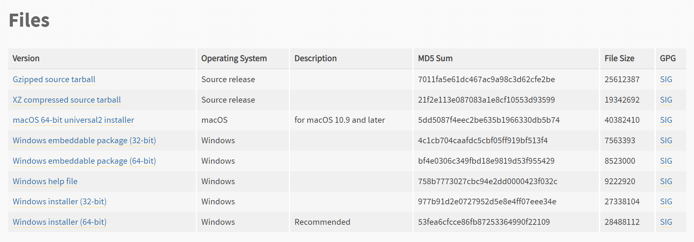
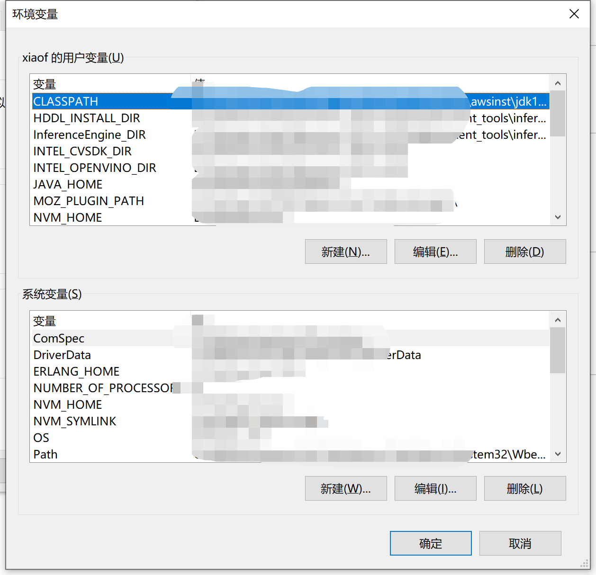
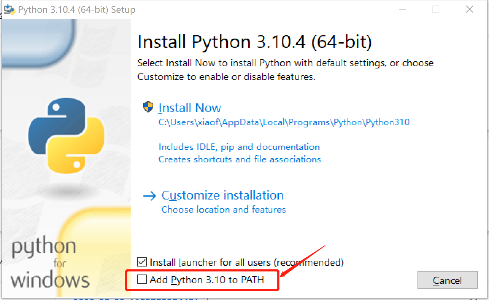
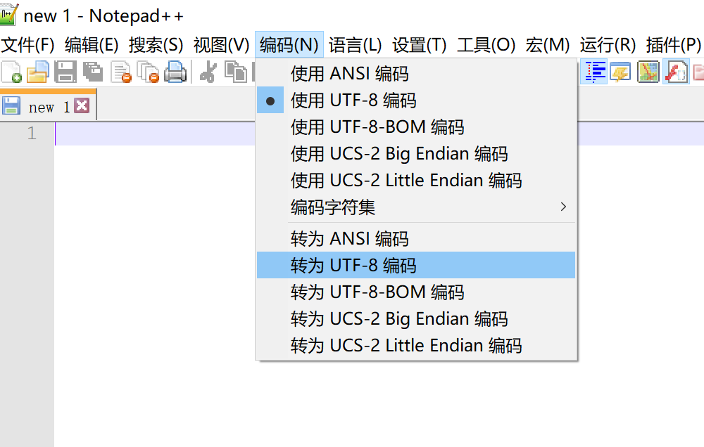

在《编程，真不难》中，我们对编程做了初步认识，并选择 Python 作为默认的编程语言。
下面，就来看看如何用 Python 编程，用程序员的说法就是让程序 跑起来。
运行程序的平台
计算机看起来很复杂，其实内部很简单，就是不断地表示、传输 和 变换 0 和 1 这两种状态。
虽然状态简单，但用数以亿计的规模，就能表示出逼真的图像、实现各种逻辑运算。
就像北京奥运会上的活字表演，通过上下两个状态，多个单元组合起来就能表现出丰富的形状一样。
计算机一旦启动，就以超高的速度，不断地处理大量的 0 和 1，如同奔腾的河流。
为了能操控计算机，让它按照我们的设想运行，需要在其上建立一套控制系统，即 操作系统。
比如 Windows、MacOS、Linux，还有用于智能手机的 Android、iOS等等，都是操作系统。
操作系统完成了绝大部分操作和控制计算机的工作，就像在奔流涌动的河流上的一个超级大坝。
大坝有序控制着水流，并给我们提供了一个可以操控水流的平台，让我们可以将水流的动能转化为其他我们想要的能量或者形式。
而且在这个平台上，我们还可以构筑自己的建筑，并增加需要的功能 —— 基于操作系统开发应用程序。
操作系统为我们提供了大量的计算机调用接口。有的接口提供了图形化的操作方式，而更多的接口只能通过程序的方式才能调用。
笑来老师在《把时间当作朋友》中，将我们的底层认知，比喻成操作系统，可谓是恰如其分。
当一个操作系统不够稳定，可靠，精致时，不难想象构筑在其上的应用程序会是多么的浅薄。
我们将来编写的程序，就是基于操作系统这个平台的。
不同操作系统之间除了共性，还存在着很多差异。
比如 Windows 中，用 / （反斜杠）作为文件系统的路径分割符，而 Linux 以及 MacOS 中用的是 \ （斜杠）。
这些不同，会对编程造成一定的影响，很多时候不得不针对不同的操作系统，编写对应的软件版本，比如我们即将看到的 Python 编译器。
好在有 编译器，操作系统之间的绝大多数差异，都被编译器屏蔽了。
编译器是不同的编程语言，为了让程序能与操作系统融合，也就是合理地调用操作系统的接口而建立的，解释编译代码的软件。
有点拗口，打个比方，就像一个全自动洗衣机，可以自动控制水量、清洗时间、清洗过程，我们只需要准备好衣物，洗衣粉（液），柔顺剂，加入洗衣机规定的位置即可。
有了编译器，编程中 90% 以上与操作系统接口相关的工作就已经完成了，而我们需要做的就是梳理业务逻辑，用合适的代码将其表示出来。
这也就是为什么现在编程技能的门槛低到小孩子都能掌握的原因。
回想一下上篇文章中雷军写的代码，那时想要操作计算机，需要用到汇编语言，精细地控制计算机内部单元，甚至需要直接操作 CPU（中央处理器，计算机的核心运算单元） 的每个元素。
基于编译器，就可以忽略操作系统之间的差异，从而使得我们程序可以一处编写，到处运行。
安装 Python 编译器
下面来看看，我们 Python 牌的 “全自动洗衣机” 吧。
Python 为不同的操作系统，量身定做了性能、功能几乎完全相同的编译器 —— 编译 Python 代码的程序。
所以在选用之前，需要明确自己用的是什么操作系统，再选择相应的版本：

注意：需要选择 Python 3，而不是 Python 2
基于种种原因，Python 2 已退出舞台中心，Python 3 已然成为了最受欢迎的 Python 语言版本
另外，建议选择 Python 3.6 以后的版本，因为很多有用的语言特性是在 3.6 版本中添加的
选择好后，下载程序，然后像按照一般应用程序一样安装。
因为编译器本身就是个程序。所以这里略去具体的安装步骤，读者可以自行查找，与自己操作系统对应的安装详细步骤。
这里给出一篇用于参考的安装教程。
安装过程一定会遇到各种各样的问题，不要紧，这就是探索过程中的乐趣所在。
如果遇到实在解决不了的问题，可以向笔者反馈。
配置编译器
一般我们的习惯是，通过双击程序的图标，打开程序。
但对程序编译器来说，方式有些不同，但本质是一样的，都是得让操作系统知道要运行的程序在哪儿。
如何让操作系统知道我们的 Python 编译器在哪儿呢，需要了解两个概念：环境变量 和 命令行。
环境变量
简单说，就是程序执行时所处的环境信息。
这个解释比较抽象，我们看个例子：
假如我们，在一个有很多房间的陌生大楼里，每个房间里放着各种物品或者设备，现在要求我们找到 347 号打印机，打印一份 4378 号文件。
我们一定很茫然，因为我们不知道 347 号打印在哪儿？4378 号文件又在何处？
如果房间数量少，还可以逐个找找，但房间数量太多话，就很难了，更何况对现在这个大楼并不熟悉。
如果此时，我们能找到一些线索，比如在哪些层、哪些房间可能存在我们要找的东西，那我们就可以按图索骥了。
可问题是，即使存在这样的线索，我们要去哪儿找这些线索呢？
庆幸的是每个大楼，都设置了一个服务台，专门存放供大家查阅的信息。
其实，例子中的大楼就是操作系统，执行任务的我们就是程序，而存放线索的位置，就是环境变量。
为啥叫这个奇怪的名，不叫个公告栏或者服务台啥的呢？
这是因为，早期的计算机是由一群程序员设计的，程序中能存放数据的单位被称为变量，而在整体环境中能存放信息的位置就自然地叫成了环境变量，后面就成了惯例。
无论是 Windows、Linux，或者是 macOS，都有环境变量，比如笔者的电脑上的环境变量设置：

如果不知道自己的电脑如何找，网上有很多具体的说明可自行查阅。
在环境变量中，有个字段：path，其中存放的列表就是执行程序时需要查找的位置。
无论什么程序，只要想在命令行程序中运行，就必须将其所在的位置加入到 path 中，或者，将自己放在已经在 path 的某个路径里，否则，将命令行将查找不到，从而无法执行。
现在是否理解了环境变量了呢？如果是，那编程技能就提升了一大截。
说了半天，这个环境变量与我们的 Python 编程有什么关系呢？
先不要着急，我们还得了解一个概念。
命令行
一提到命令行，很多读者就发怵，那黑乎乎的一片，不断翻滚的字符，以及神秘的符号，完全是不食烟火之人玩的东西。
确实，很多段子、影视剧，甚至程序员自己，都把这样的场景包装成很神秘的样子。
其实呀，一点都不神秘，也谈不上难。
在早期，图形化还不成熟的时候，与电脑的主要交互方式就是通过命令行来交互。甚至电脑启动后，只能看到一个不断闪烁的命令提示符。
在我小时候，当时电脑培训的内容就是如何使用 DOS。
这个 DOS 就是 Windows 操作系统中的命令行前身，甚至可以说是 Windows 操作系统的前身。
而后，随着图形化的发展和流行，越来越多的程序，都有使用更直观的图形化界面。甚至，基于 Linux 的 Android 智能手机操作系统，干脆屏蔽了命令行的展现形式。要知道命令行可是 Linux 的强项呀。
而原本非常基础的命令行式交互方式，就显得古老而神秘了。
虽然命令行比起图形化的应用程序，不太直观，但是，在编程过程中，却有无比便利的优势。
这是因为，程序执行的大部分时间是不需人为干涉的，只需给它提供可用的资源（输入），让它按照一定的逻辑处理（处理），最后它就能把结果放在某个地方（输出），而中间的处理过程不需要F都展示。
想象一下，我们需要从一个网站上爬取信息，期望的方式是执行一段代码，过一会儿，就能得到数据结果，而不是时时刻刻都需要我们的参与。
另外，很多程序像爬虫程序一样，适合运行在云服务器上，而绝大多数云服务器根本就不支持图形界面。
除此之外，让程序具有图形界面是比较费事的。比如一个输入框，从选择合适的图形框架，到编写能合理处理各种输入的代码，需要花费大量的时间和精力。如果不是要推向市场的软件产品，很少有开发者愿意付出这个代价。
这就是程序员都喜欢命令行的原因，因为它足够的简单、高效，不用考虑太多的东西，也不用花费太大代价，即单纯。
命令行，在不同操作系统上的叫法有所不同，Windows 中也被称为 命令提示符，类 Linux， MacOS 中，被称作 终端
运行 Python 编译器
理解了环境变量，也认识了命令行，现在打开命令行（如果不清楚如何开启，网上有很多具体教程可以参考）。
启动命令行后，在提示符上输入 python，并按回车，如果一切正常，会看到类似下面的显示：
1 | C:\Users\xiaof>python |
先不要管显示的是什么东西，我们先了解一下，命令行在收到命令后做了什么。
刚才输入的 python，对命令行来说是一个命令，意思是需要命令行执行一个叫做 python 的命令或者程序。
输入回车之后，命令行就会在环境变量的 path 列表中，逐个查找 python 可执行程序。
如果像上面显示的结果，就说明命令行找到了一个叫 python 的程序，并且将其运行起来了。
那么为什么命令行能找到呢？
是因为环境变量的 path 里，保存了一个 python 程序所在的目录。
还记得安装 Python 编译器时，有个意思是 是否要将 Python 添加到 Path 中 的选项吗？

勾选了这个选项，就能将 Python 程序所在的位置，添加到环境变量的 path 中了。
这就是，当我们打开命令行，输入命令 python 时，看到类似上面结果的原因。
一般情况下，命令行启动时，会将
path中的信息读取进来，这样就不用每次运行命令时，都去查询环境变量了。但，也会引入一个问题：命令行一旦打开，无法知道，其打开后，加入到环境变量中的信息了。
因此，如果一个命令行在安装 Python 前打开就已经打开了，那么，即使正确安装了 Python，在这个命令行中也无法正常运行
python命令。解决方法很简单，关闭掉这个命令行，重新打开一个就是了。
绕了这么大圈，笔者到底想说什么？
其实就是想让读者明白，如何有效地在命令行中使用 Python 编译器。
在实际环境中，情况往往很复杂。
可能电脑上已经安装了 Python、或者需要与原来 Python 的环境区分开、或者将 Python 安装到了其他目录中、想用之前已经安装好的等等。
无论什么情况，原理都是相同的，只要将自己想使用的 Python 编译程序的位置，写入到环境变量的 path 列表中就可以。
如果有多套环境，可以通过在 path 中调整位置的先后顺序，来控制优先使用哪个版本的 Python 编译器。
不仅如此，未来我们在使用 IDE（集成开发环境），如 VS code，或者更高级的编译工具，如 Jupyter时，就不会被如何选择 Python 编译器搞晕了。
特别是当我们需要用虚拟环境时，现在的这些准备会显得尤为重要。
而大多数人只想直奔主题，而不去理解其中的原理，就总是会卡在命令行和环境变量这两个坑里。
Python 编译器的工作模式
现在，我们可是安心地，理解刚才执行 python 命后的结果了。
Python 编译器有两种工作模式，第一种是 交互模式。
前面运行 python 命令后出现的结果，就是进入了编译器的交互模式。
这个模式很像命令行程序，不过命令提示符变成了 >>>。这是为了我们能够更容易地识别出当前所处的环境。
命令行提示符，在不同的模式或者环境之下会有不同的样式，比如 >、#、$ 等
在交互模式中，输入任何合法的 Python 代码，立即就能看到代码执行的结果。
比如输入: 1 + 1 回车，就会看到执行结果为 2。
交互模式很有用，就能随意地与 Python 编译器交互，学习和实践 Python 的语法和特性。
另外，日常工作中也很常用，比如验证某个语法特性，或者跑一下某个算法等等。很多时候感觉 Python 交互模式，就像一个电脑里带的计算器。的确，把它当成计算器完全没问题哈哈。
如果需要退出交互模式的话，输入 exit() 回车就可以了。
第二种模式是 执行模式。
当 python 命令后添加一个代码文件的参数时，就会触发 Python 编译器的执行模式。
例如，在当前目录下，有个 main.py 代码文件，那么执行这个代码文件的命令是：
1 | python main.py |
这时，main.py 就会被输入到 Python 编译器中，被解释成操作系统可以执行的程序，并执行。
交互模式 和 执行模式，本质上是一样的，只不过，交互模式的每一步执行都会与用户交互。而执行模式，可以对一整段代码，即代码文件进行一并执行。
实践当中，我们可以根据自己的需要，选择适合的编译模式。
代码编辑器
编写代码，需要用到代码编辑器。
代码编辑器品类繁多，功能从简易到高级应有尽有。比如我最常用的编辑器是 VS Code。
不过，刚开始学习编程时，不需要功能强大的代码编辑器，越简单越好，比如使用操作系统自带的文本编辑器。
为什么呢？
首先，不需要为打造一个功能强大编辑工具劳神。并不是说功能强大不好，而是刚开始并不知道哪些功能更适合自己。而随着对编程技能的深入练习，就会自然地倾向于某些功能，从而选择一个适合自己，用着趁手的编辑器。
第二，很多编译器具有语法提示功能，很大程度减轻了代码编写工作量。但对初学者来说，不利于对语法特性的深入了解。
第三，功能强大的编辑器，会有程度相当的使用复杂度。很多时候，因为无法让编辑器达到预期效果，而产生对编程技能的厌恶情绪。这对刚开始学习编程的人来说，影响往往是巨大的，很可能就此放弃对编程技能的继续学习。
功能强大的编辑器写出的代码并不会比简单的编辑器写出来的更正确。
无论什么样的编辑器写出的代码，最终都是一个文本文件，虽然文件的扩展名是 py。
只要是文本文件，就能作为 Python 编译器的输入，就能被有效地执行。当然是否正确执行取决于代码语法和逻辑是否正确。
需要特别提醒的是，需要将文本文件的编码格式设置为 utf-8，utf-8 编码这个是目前通用性最好的编码方式，无论是在网络上传输，还是在其他机器上运行，都没问题。
而非 utf-8 的编码格式，可能会在执行时，会得到编码错误的错误提示。
这里，推荐一个简易的编辑器： Notepad++。
这款编辑器，轻巧如操作系统自带的文本编辑器，更重要的是它提供了，便捷的文本编码格式转化功能：

小试牛刀
现在，我们来写段代码，跑跑看。
按照惯，我们就写个 Hello World 吧。
用手头的文本编辑器，创建一个文件，输入一行代码：
1 | print("Hello world!") |
保存文件，且名为 hello.py（当然，只要符合操作系统文件名命名规范，可以随意命名）。
在保存文件的文件夹中，打开一个命令行程序。
在其中输入：
1 | python hello.py |
回车，就给看到一行输出：Hello world，说明我们第一个程序能跑了。
命令行总是会在某一个文件目录下工作。一般从哪个目录打开，默认的工作目录就是打开命令行程序时的目录。可以通过
cd命令来切换当前目录。操作系统都有这个命令。
如果打开的命令行不在代码的目录下，需要得到正确的执行结果，可以：
- 通过
cd命令切换到代码目录下； - 将执行命令改成
python [代码文件路径]hello.py，例如python /program/python/hello.py
以上两种执行方式，对程序来说会稍有不同，在后面讨论程序的当前目录时会详述
程序虽然简单，但麻雀虽小五脏俱全：
-
输入部分：没有输入。没有输入可以看作一种输入的特例，就像 0 也是一个数字一样。
-
处理部分：将一个字符串
Hello world，通过 Python 的方法print处理，输出到操作系统的标准输出端。 -
输出部分：在标准输出端（暂且理解成命令行的输出）上显示
Hello world字样。
任何程序，无论多么复杂，结构都是类似的。
比如 Python 编译器这个程序，输入是代码文件，处理过程是编译并执行代码文件，输出结果是返回代码文件执行的结果。
总结
今天，我们从程序如何执行开始，了解了 Python 编译器，并且了解了两个重要的概念: 环境变量、命令行。最后还编写了一个简单的 Python 代码。
读者可能会觉得笔者的介绍很拖沓，说了半天，一点 Python 语法没有介绍，才讲了个 Hello World。
笔者特别能理解这种感受。想当初，笔者开始学习编程时，也有种迫不及待想要立即掌握编程技能的冲动。
不过，随着学习和实践的深入，笔者发现：无论编程语言多么复杂，功能多么强大，编程本身并不难，日常能用到的特性和功能估计不到 20%。而常出问题的地方，恰恰是与编程无关的地方，工作中常常会因为环境问题、工具问题、基础知识问题等，导致编程工作困难重重，耗费大量时间。
当问题被解决的那一刻，虽然感到很舒畅，但更多的可能是对自己忽略了一个不起眼的问题而懊悔。比如，调试了半天，才发现编译环境不对……
因此，我们宁可多花点时间，在一些重要的、基础性的、且容易被忽视的地方下点功夫，练好基本功。
还记得上一篇文章中，提到的一个编程的重要品质：耐心 吗？
因为，我们不是要按部就班地像机器一样工作，而是要对重要的事情知其然，知其所以然，结合自己的主观能动性，创造性地解决问题。
只要这样，我们才能从容地应对各种情况，处理各种问题，将编程技能学有所用，并将其发挥到极致。
笔者的水平有限，文章中难免出现各种错误和问题，恳请读者不吝批评、指正。十分感谢！
比心！